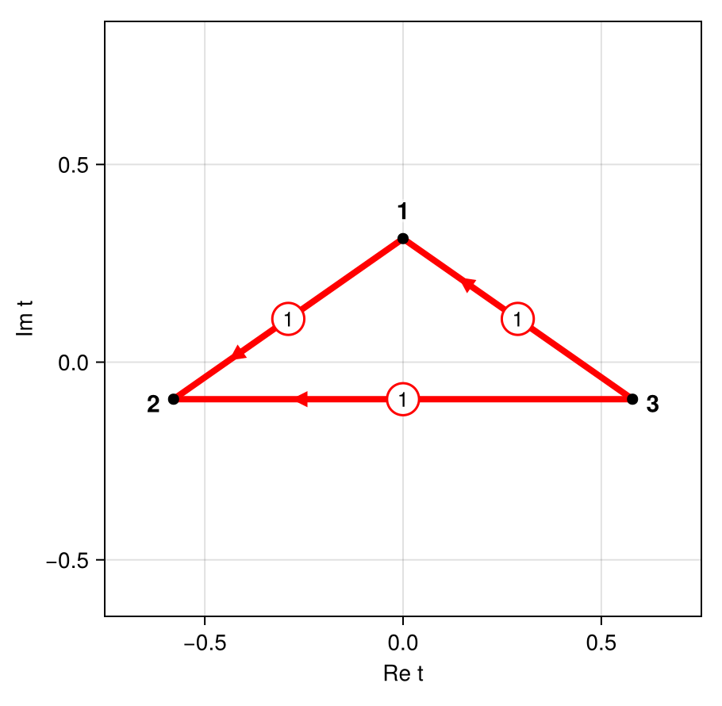
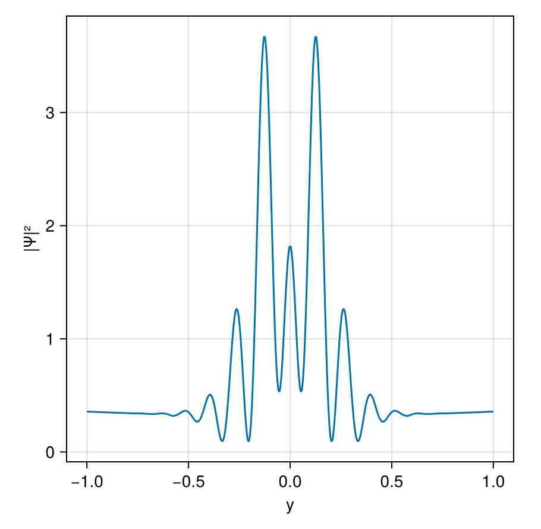
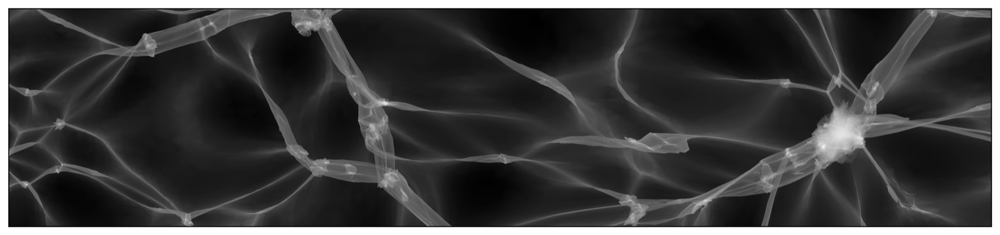
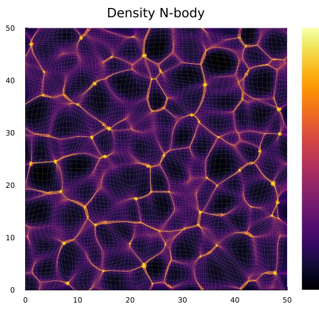
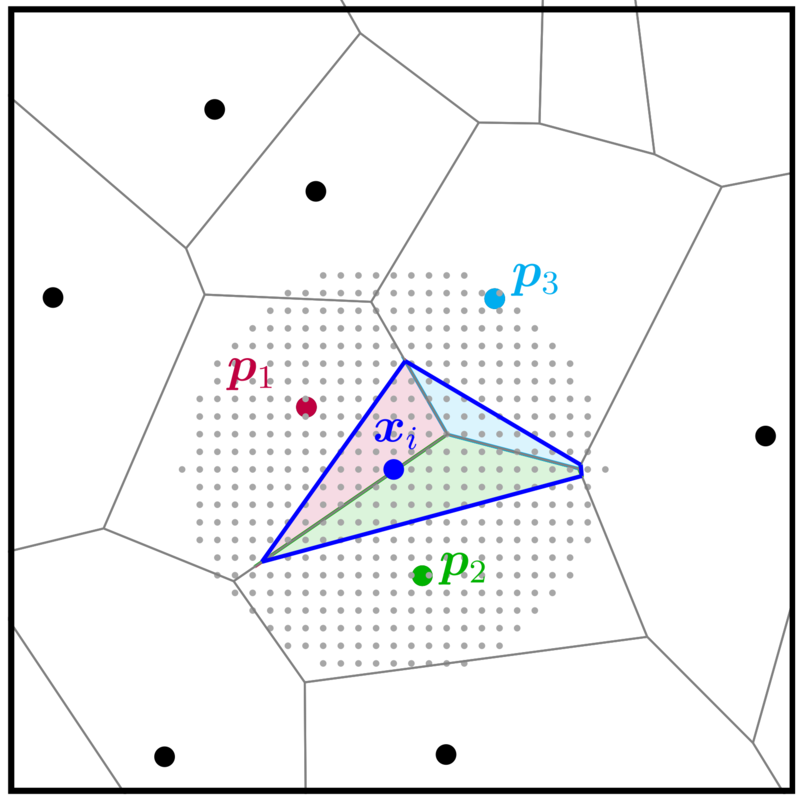

Julia packages
Open-source Julia packages that accompany my research. Each package is on GitHub, and the registered packages can be installed directly from the Julia package manager.
Resurgence.jl

Asymptotic evaluation of multidimensional oscillatory integrals with polynomial or rational exponents using resurgence. Integration by parts and Brieskorn reduction give the Gauss–Manin system of the exponent, which generates the asymptotic series of all saddle points. The monodromy of its Borel transform yields the Stokes constants and hence the adjacency of the saddle points. Combined with the South-East rule, this identifies the relevant saddle points and gives superasymptotic and hyperasymptotic approximations without computing steepest-descent manifolds. The package accompanies Asymptotic evaluation of multidimensional oscillatory integrals.
Not yet in the General registry; install it from GitHub:
pkg> add https://github.com/jfeldbrugge/Resurgence.jlPicardLefschetzIntegration.jl

Numerical evaluation of multidimensional oscillatory integrals with meromorphic exponents using Picard–Lefschetz theory. The integration domain is deformed in the complex plane onto the Lefschetz thimbles, where the integral converges absolutely and can be evaluated efficiently. It is a more accessible Julia implementation of the method behind my C++ Picard–Lefschetz code, with applications to wave optics in astronomy.
pkg> add PicardLefschetzIntegrationPhaseSpaceDTFE.jl

Estimates the density and velocity fields of an N-body simulation with the phase-space Delaunay tessellation field estimator, which follows the dark matter sheet in phase space and therefore resolves the multi-stream regions of the cosmic web. The package accompanies the paper Phase-space Delaunay tessellation field estimator, published in Monthly Notices of the Royal Astronomical Society.
pkg> add PhaseSpaceDTFENbody2D.jl

A particle-mesh code for two-dimensional cosmological N-body simulations, inspired by Johan Hidding’s nbody2d Python code. It is a quick environment to learn and experiment with cosmological N-body simulations: it samples unconstrained and constrained Gaussian random fields as initial conditions, evolves them to the present epoch, and estimates the density, velocity and number-of-streams fields with the phase-space Delaunay tessellation field estimator.
pkg> add Nbody2DDiscreteNaturalNeighbors.jl

Discrete natural neighbour interpolation of n-dimensional data, developed by Benjamin Hertzsch in collaboration with me. Natural neighbour (Sibson) interpolation is a parameter-free, smooth and spatially adaptive way to interpolate a field from scattered data points, but it requires a new Voronoi tessellation for every interpolation site. Following Park et al. (2006), the package replaces these volume calculations by in-cell counts on a discrete grid of interpolation sites, which makes the method practical for large data sets.
pkg> add DiscreteNaturalNeighbors